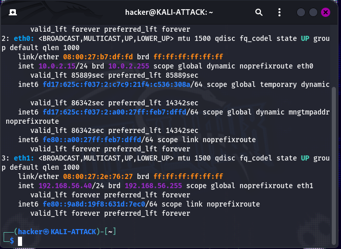
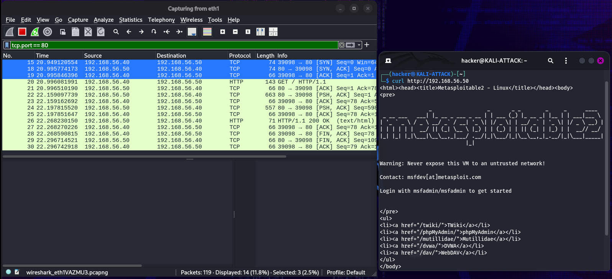
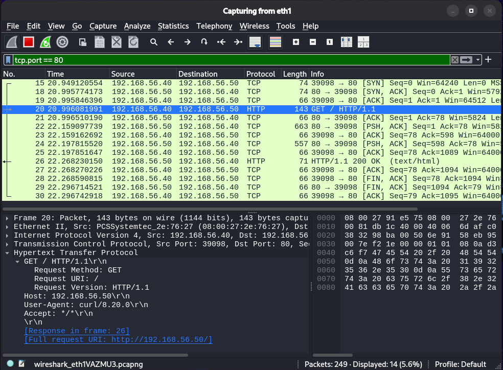
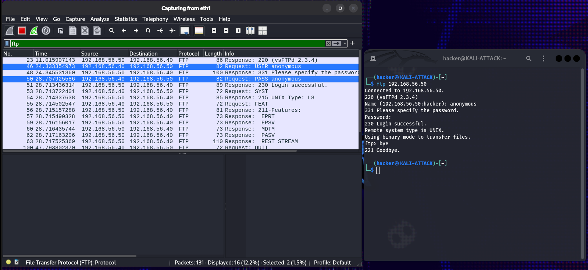
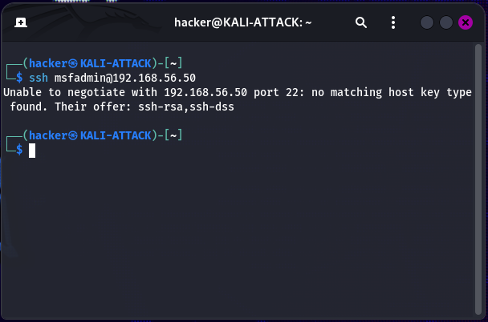
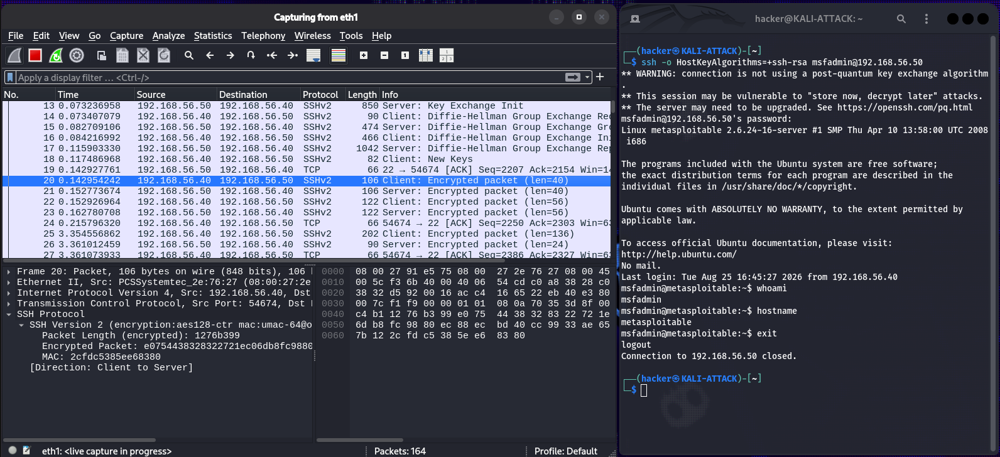

Overview
This lab builds upon the isolated network environment created in Lab 1 and the reconnaissance performed in Lab 2. Wireshark was used to capture and analyze network traffic generated between the Kali attacker system and Metasploitable 2.
The analysis focused on understanding normal network and protocol behavior, including ARP, ICMP, DNS, TCP, HTTP, FTP, and SSH. Particular attention was given to the difference between plaintext and encrypted communications.
The lab also provided practical experience with TCP connection establishment and teardown and troubleshooting compatibility between a modern SSH client and a legacy server.
Objectives
Packet Capture
Capture network traffic from the isolated Host-Only network using Wireshark.
Protocol Analysis
Analyze ARP, ICMP, DNS, TCP, HTTP, FTP, and SSH traffic at the packet level.
TCP Behavior
Identify TCP connection establishment and termination.
Plaintext Traffic
Examine application data transmitted without encryption.
Encrypted Traffic
Compare plaintext FTP communication with encrypted SSH communication.
Packet Analysis
Develop practical packet-analysis and network troubleshooting skills.
Lab Environment
| Component | Details |
|---|---|
| Hypervisor | Oracle VirtualBox |
| Packet Capture Host | KALI-ATTACK — 192.168.56.40 |
| Primary Target | METASPLOITABLE2 — 192.168.56.50 |
| Network | 192.168.56.0/24 Host-Only |
| Capture Interface | eth1 |
| Primary Tool | Wireshark |
Traffic Analysis Process
Network Verification
Confirmed the correct Host-Only interface and verified connectivity to the target.
Packet Capture
Configured Wireshark to capture traffic on the isolated eth1 interface.
Protocol Analysis
Examined ARP, ICMP, and DNS traffic to understand basic network communication.
TCP Analysis
Examined TCP connection establishment, data transfer, and connection teardown.
Plaintext Protocols
Examined HTTP and FTP traffic to observe information transmitted without encryption.
Encrypted SSH
Compared SSH traffic with FTP and investigated a legacy cryptographic compatibility issue.
01 — Network Verification
Before beginning packet capture, the Kali Host-Only interface was verified to ensure Wireshark would capture traffic from the correct isolated network.

Kali interface verification showing eth1 configured for the 192.168.56.0/24 Host-Only network.
Capture Interface
The eth1 interface was confirmed as the Host-Only network interface.
Address
Kali was configured with 192.168.56.40/24 on the isolated network.
02 — TCP Connection Behavior
A connection to the Metasploitable 2 HTTP service was generated and captured in Wireshark. Filtering on TCP port 80 allowed the connection establishment process to be examined.

TCP three-way handshake showing SYN, SYN/ACK, and ACK.
SYN
The client initiated the connection with a SYN packet.
SYN/ACK
The server responded with SYN/ACK to acknowledge the connection request.
ACK
The client completed the handshake with an ACK, establishing the TCP connection.
03 — HTTP Traffic
HTTP traffic generated during the TCP connection was examined at the application layer. The request exposed information such as the request method, requested resource, host, and user agent.

HTTP traffic demonstrating application-layer information visible in an unencrypted connection.
Security Observation
Because HTTP does not encrypt application-layer traffic, information contained within the request can be observed directly in a packet capture. This provides a practical contrast with encrypted HTTPS communication.
04 — FTP Plaintext Communication
FTP traffic was generated by connecting to the Metasploitable 2 FTP service using anonymous access. Wireshark was then used to inspect the FTP control traffic.

FTP control traffic showing plaintext protocol communication.
Plaintext Commands
FTP control traffic exposed commands exchanged between the client and server.
Authentication Exposure
FTP transmits authentication information without encryption, allowing it to be observed in a packet capture.
Security Implication
The capture demonstrates why plaintext authentication protocols are inappropriate for secure administrative use.
05 — SSH Compatibility Troubleshooting
An SSH connection to Metasploitable 2 was initially rejected by the modern Kali SSH client because the legacy server offered cryptographic host-key algorithms that are disabled by default.

Modern OpenSSH rejecting the legacy ssh-rsa and ssh-dss algorithms offered by the outdated server.
Resolution
The connection was established using a connection-specific legacy host-key algorithm override rather than changing Kali's global SSH configuration.
ssh -o HostKeyAlgorithms=+ssh-rsa msfadmin@192.168.56.50
Root Cause
The legacy Metasploitable 2 SSH server offered cryptographic algorithms rejected by modern OpenSSH.
Scoped Override
The legacy algorithm was enabled only for the individual connection.
06 — Encrypted SSH Traffic
After establishing the SSH session, the resulting traffic was examined in Wireshark and compared with the plaintext FTP traffic observed earlier.

SSH traffic demonstrating encrypted session communication.
Encrypted Session
The authenticated SSH session did not expose the user's password or command contents as readable plaintext.
FTP Comparison
Unlike FTP, SSH protected the contents of the authenticated session through encryption.
Security Context
The comparison demonstrated the practical confidentiality difference between plaintext and encrypted protocols.
Protocol Validation
| Protocol | Traffic Observed | Result |
|---|---|---|
| ARP | Address resolution | Successful |
| ICMP | Echo Request/Reply | Successful |
| DNS | Query/Response | Successful |
| TCP | Handshake and teardown | Successful |
| HTTP | GET request/response | Successful |
| FTP | Plaintext control traffic | Successful |
| SSH | Encrypted session traffic | Successful |
The packet captures provided packet-level evidence supporting the expected behavior of each protocol examined during the lab.
Key Findings
Packet-Level Visibility
Wireshark provided visibility into network communication beyond what was available through Nmap service enumeration.
TCP Lifecycle
Packet captures demonstrated both TCP connection establishment and controlled connection termination.
Plaintext Exposure
HTTP and FTP traffic demonstrated how unencrypted protocols can expose application-layer information.
Encrypted Communication
SSH protected the contents of the authenticated session, preventing the password and commands from appearing as readable plaintext in the capture.
Lessons Learned
- Packet captures provide significantly more context than port scans alone.
- ARP resolves local IPv4 addresses to Ethernet MAC addresses before normal local IPv4 communication.
- ICMP uses request and response traffic to test network reachability.
- DNS activity can provide useful network and security telemetry.
- TCP connections begin with a three-way handshake and terminate through a controlled FIN/ACK exchange.
- HTTP and FTP transmit application-layer information without encryption.
- SSH protects authenticated session contents through encryption.
- Legacy systems may require obsolete cryptographic algorithms that modern clients intentionally reject.
- Wireshark provides useful visibility into both normal protocol behavior and potential security weaknesses.
MITRE ATT&CK Mapping
| Tactic | Technique | ID |
|---|---|---|
| Discovery | Network Service Discovery | T1046 |
| Discovery | Remote System Discovery | T1018 |
Technical Documentation
The complete technical documentation contains the full capture procedure, Wireshark filters, additional screenshots, protocol analysis, SSH troubleshooting details, and supporting evidence.
View Full Lab 03 Documentation on GitHub